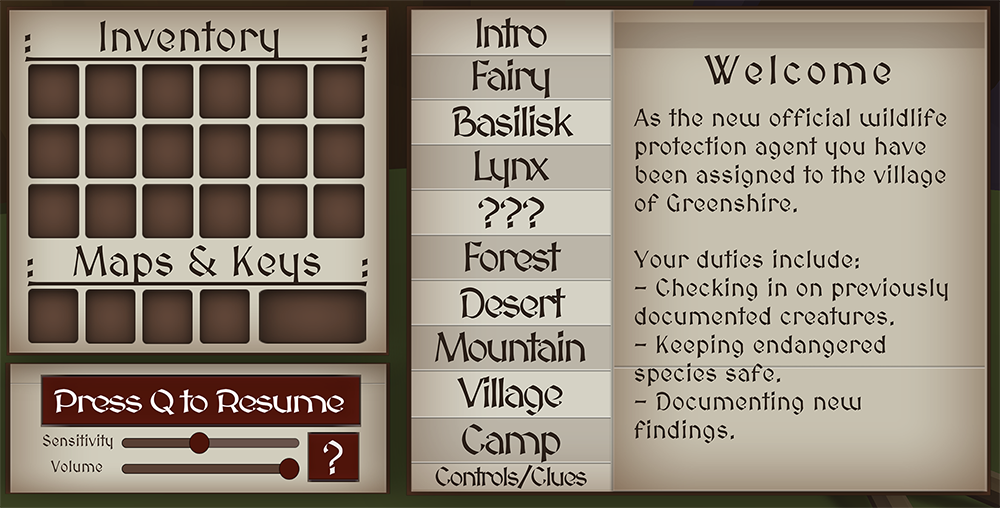
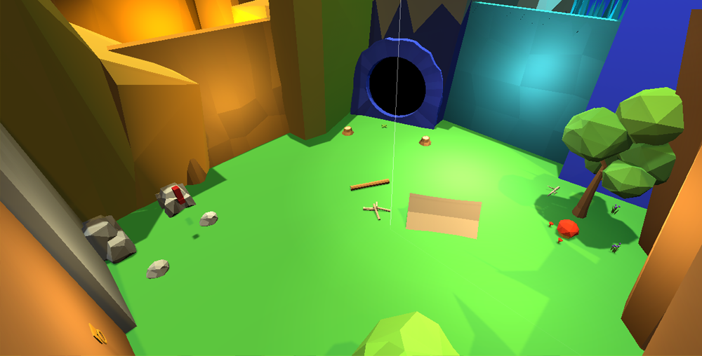
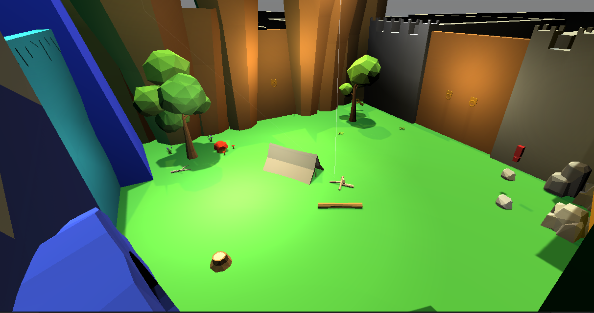
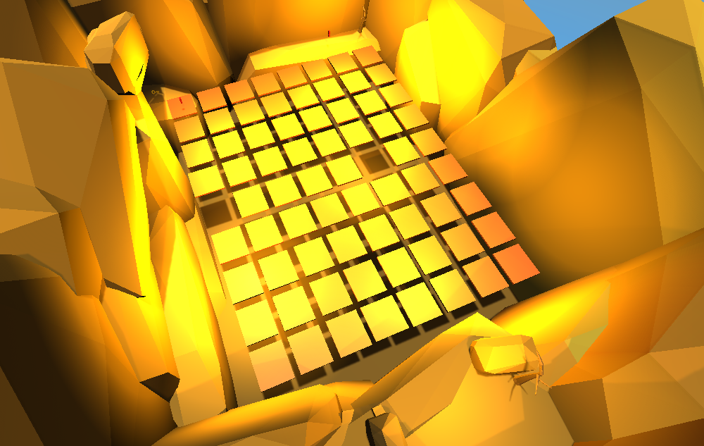
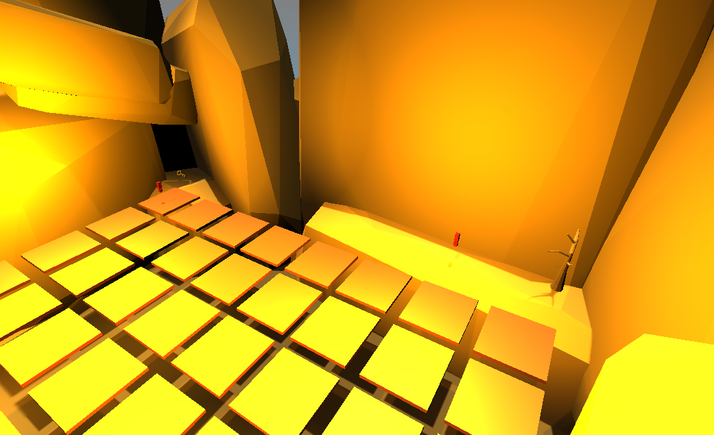
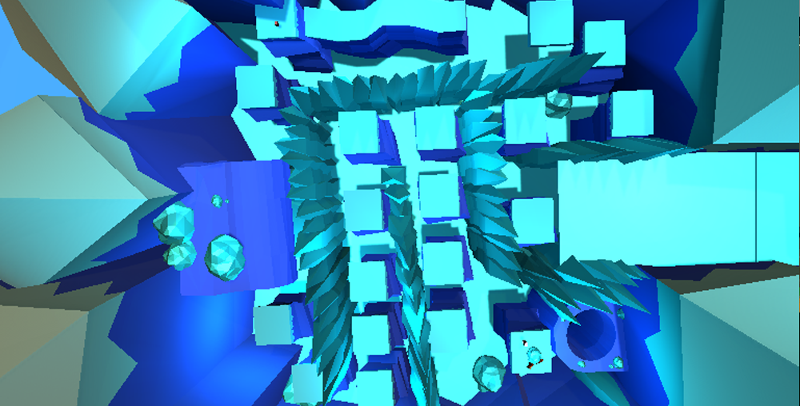
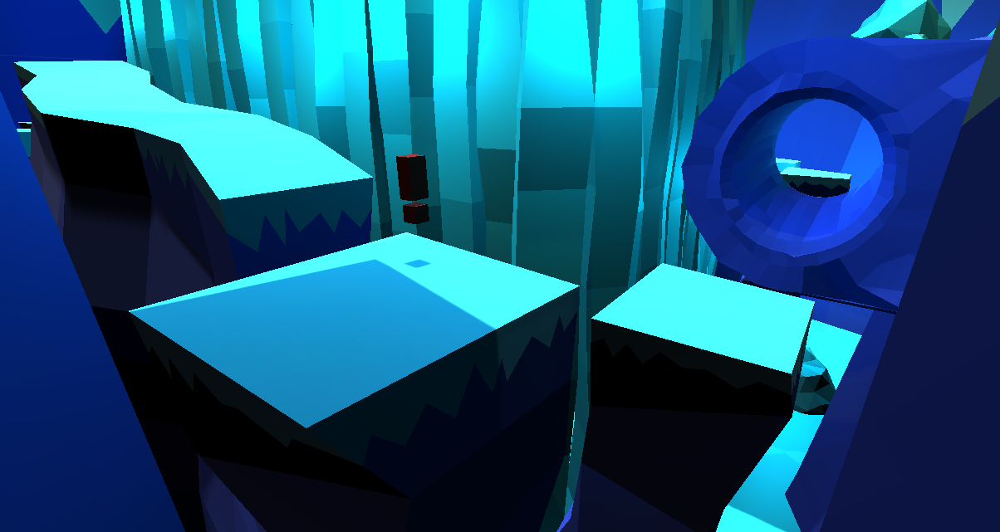
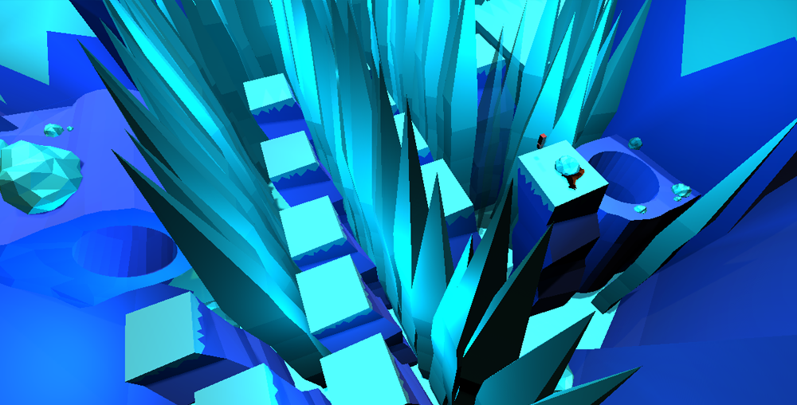
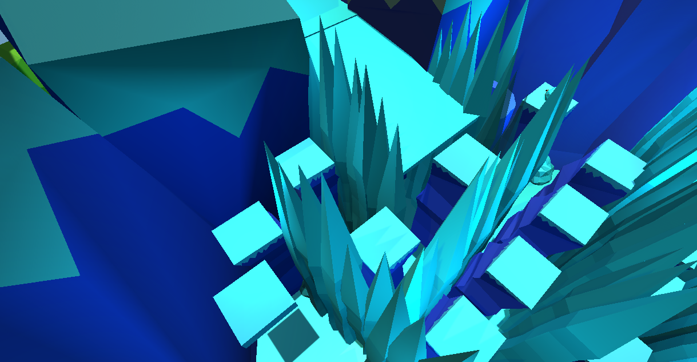

// Fall 2020
#Fantasy Rescue
Overview
This is a 3D video game that I created with a partner in my MART 581D (Video Game Design) class. This game was built and designed in Unity and Cinema 4D and programmed in C#. The objective of the game is to find keys to unlock new areas to beat the game.
This game was not completely finished due to time constraints and the class ending before the game was fully developed. Currently there are three areas that the player can explore: base camp, the desert, and ice peaks.
Learning Outcomes
- How to develop a game using the Unity 3D engine
- Video game UX design
- Using C# for game development
- Creating 3D models using Cinema 4D
- How to develop a game design document
Features
- Player Journal UI
- Slippery platforms
- Sliding surfaces
- Moving platforms
- On-Trigger Events
- Inventory System
- Sensitivity and Volume sliders
- Dynamic lighting
- Area audio
Gallery
Click images to enlarge








